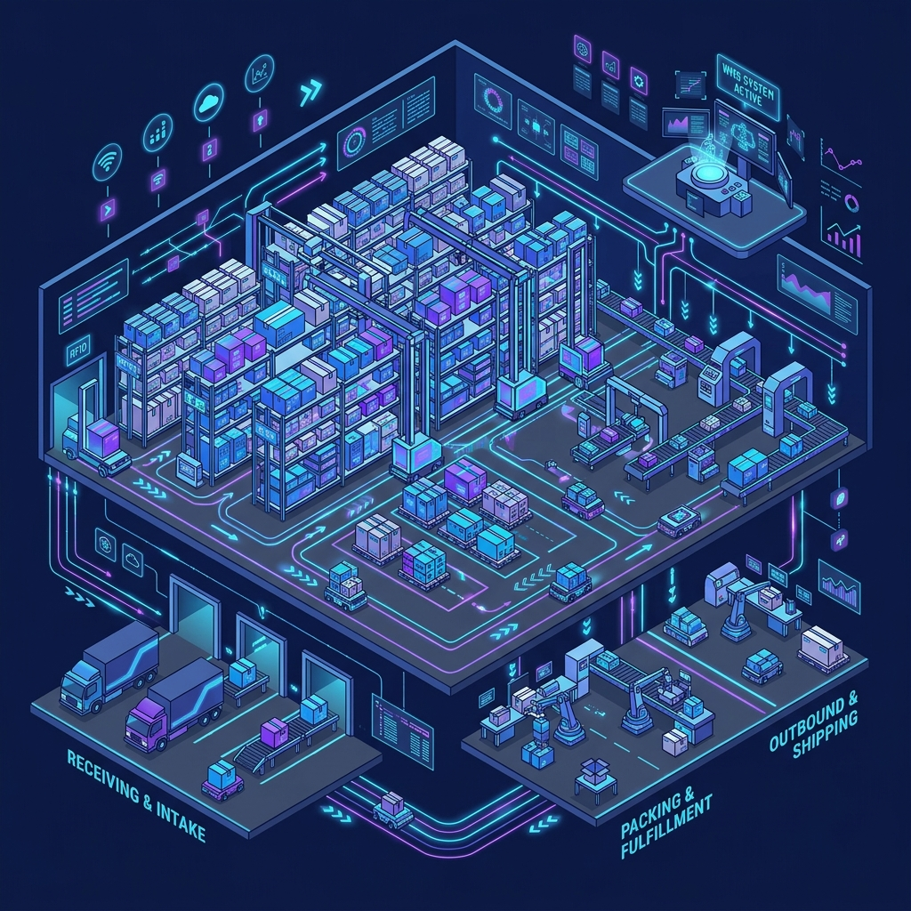
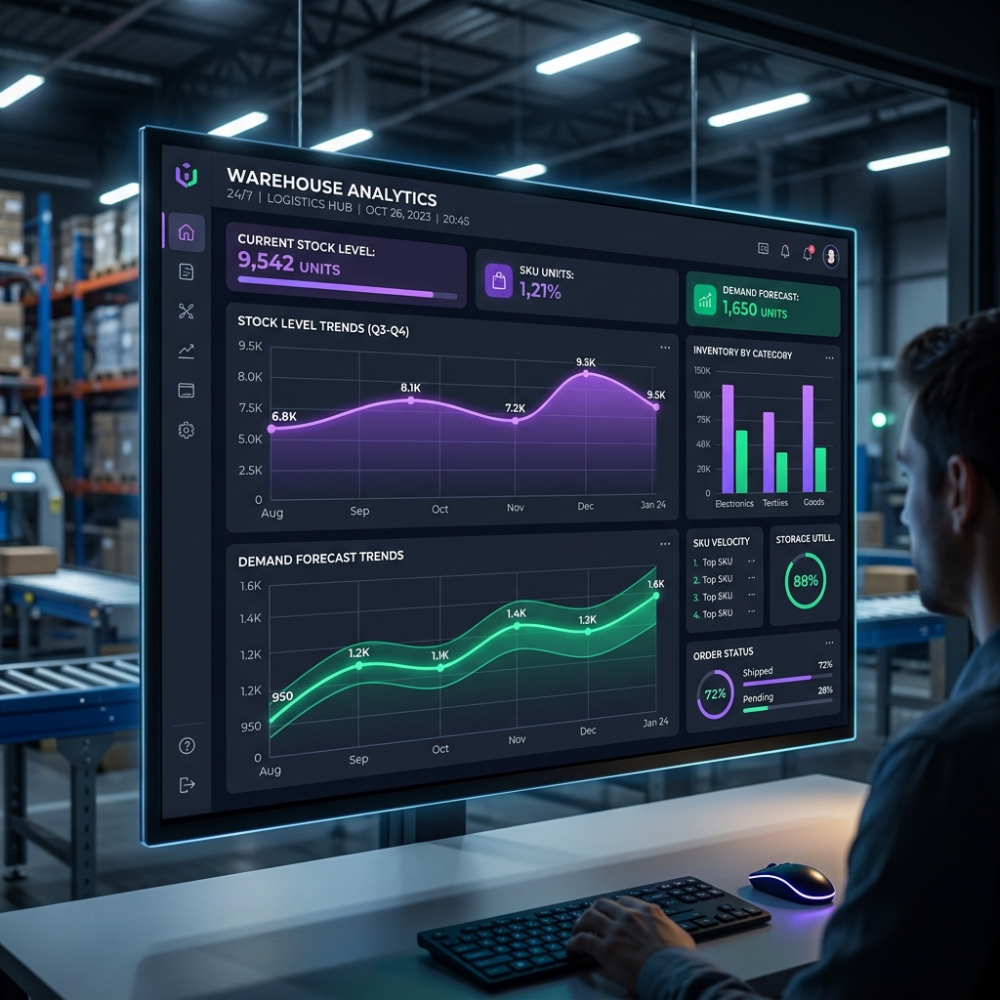

Next-Generation Inventory Control, Location Placement Coordinates, and AI-Driven Restocking Analytics

Futuristic Warehouse Layout Mockup| Table Name | Core Attributes | Constraints | Operational Role |
|---|---|---|---|
| users | id (Int), username (Varchar), email (Varchar), password (Varchar), role (Enum) | PK Unique: username, email | Manages user credentials and Role-Based Access Control (RBAC). |
| audit_logs | id (Int), user_id (Int), action (Varchar), entity_type (Varchar), before_value (JSON), after_value (JSON) | PK FK: user_id (Users) | Tracks change history (pre- and post-values) for all data updates. |
| warehouses | id (Int), name (Varchar), location (Varchar) | PK | Represents physical distribution hubs housing regional inventory. |
| categories | id (Int), name (Varchar) | PK | Logical grouping of items (e.g. Groceries, Electronics). |
| items | id (Int), name (Varchar), sku (Varchar), category_id (Int), price (Decimal), min_threshold (Int) | PK FK: category_id, Unique: sku | Global product catalog including minimum safety stock thresholds. |
| inventory | id (Int), item_id (Int), warehouse_id (Int), quantity (Int), rack, shelf, bin | PK FK: item_id, warehouse_id, Unique: (item_id, warehouse_id) | Maps current stock levels and 3D physical coordinates in warehouse bays. |
| transactions | id (Int), item_id (Int), warehouse_id (Int), type (Enum), quantity (Int), user_id (Int), notes (Text) | PK FKs to items, warehouses, users | Immutable chronological ledger auditing stock additions, shipments, and transfers. |

AI Forecasting Analytics View Mockup